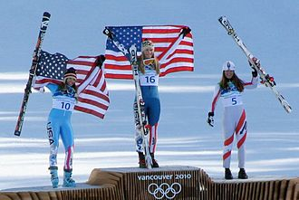
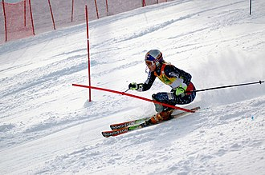
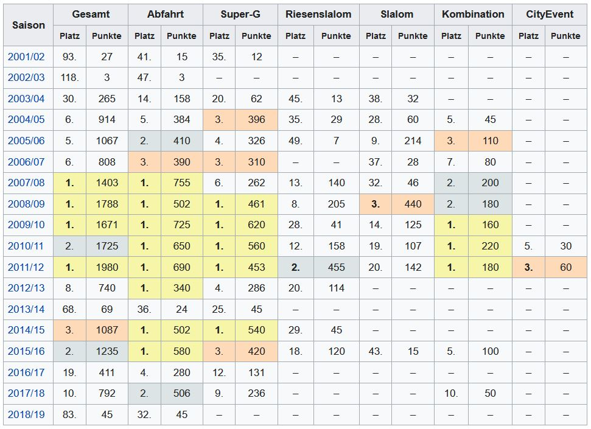

Bewerbung | Lebenslauf

Siegerehrung Abfahrt, Olympische
Winterspiele 2010
Winterspiele 2010

Lindsey Vonn in Aspen, 2006
Persönliche Daten:
- Name: Lindsey Caroline Vonn
- Nationalität: Vereinigte Staaten
- Geburstag: 18. Oktober 1984
- Geburtsort: Saint Paul, Minnesota, USA
- Größe: 178 cm
Ausbildung:
- University of Missouri High School
Erfolge:
- Einzel-Weltcupdebüt: 18. November 2000
- Einzel-Weltcupsiege: 82
- Gesamtweltcup: 1. (2007/08, 2008/09, 2009/10, 2011/12)
- Abfahrtsweltcup: 1. (2007/08, 2008/09, 2009/10, 2010/11, 2011/12, 2012/13, 2014/15, 2015/16)
- Super-G-Weltcup: 1. (2008/09, 2009/10, 2010/11, 2011/12, 2014/15)
- Riesenslalomweltcup: 2. (2011/12)
- Slalomweltcup: 3. (2008/09)
- Kombinationsweltcup: 1. (2009/10, 2010/11, 2011/12)
Weltcupwertungen:
Vonn gewann viermal den Gesamtweltcup und 16 Mal eine Disziplinwertung.
